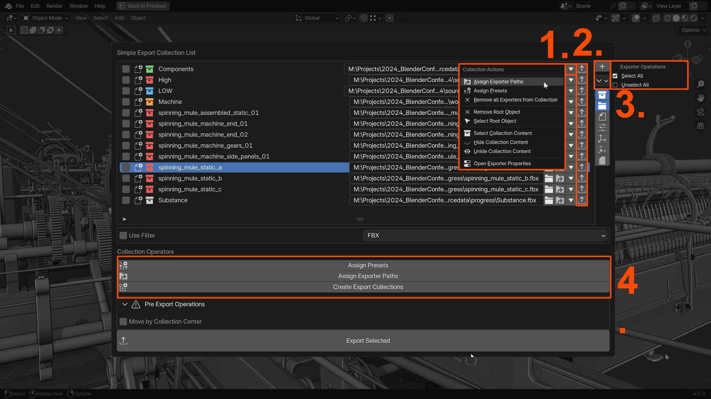

UI Overview
The Simple Export UI integrates seamlessly into various areas of Blender's interface.
- Preferences: Located in Blender Preferences, this section stores global settings shared across all files, such as default paths, presets, hotkeys, and UI options.
- Properties Panel (Output): Found in
Properties → Output, this is the add-on's main workspace. It features the Export List for managing collections and file-specific overrides for export paths and presets. - Popup Panel: Provides a streamlined view of the Export List and key operations like assigning paths and presets. Accessible via a hotkey (Default:
Shift + Alt + E) or easily assignable to the Quick Favorites. - Outliner Menu: Use the Right-Click Menu in the Outliner to export selected collections or assign paths and presets.
- Info Popups: Display feedback or error messages after key operations for clarity and troubleshooting.
The Export List
The Export List is available in Properties → Output → Simple Export or the Popup Panel. It displays all export collections and provides tools for managing them.

List Elements
- Selection: Toggle collection selection.
- Status: Displays the collection's state (e.g., New, Edit, Locked).
- Name: Collection name.
- Filepath: Exporter filepath.
- Assign Filepath: Set filepath for the exporter.
- Assign Preset: Apply a preset to the exporter.
- Export Collection: Export the selected collection.
- Filter: Filter options for the Export List.
Filter
- Exporter Type: Filter by the export type.
- Alphabetical Order: Sort collections alphabetically.
- Select/Deselect All: Manage collection selection.
Batch Operations
Batch operations allow users to apply settings or actions to multiple export collections simultaneously.

- Assign Presets: Apply presets to selected collections.
- Assign Filepaths: Assign file paths to selected collections.
- Export Selected: Export all selected collections.
Properties Panel (Output)
The Properties Panel is the main workspace for managing export collections, formats, and settings.
- Top Panel: Specify the Export Format.
- Export List: Export List.
- Pre Export Operations: Operations to be performed before the export.
- Batch Operations: Operations applied to all selected elements of the Export List.
- Overwrite Preferences: Temporarily overwrite the Preference settings.
- Create Export Collection: Creation of Export Collections.
Top Panel
The top panel includes links to documentation and preferences.
The main area contains the current export format and corresponding preset.
- Export Format: Choose the file format (e.g., FBX, OBJ).
Export List
The Export List, as outlined above, is displayed here and can be customized through preferences.
The elements displayed in the Export List can be adjusted from the preferences.
Pre Export Operations
Warning
These settings can only be applied when this addon is installed. They will not be performed when using the regular Blender exporter.
- Move collections to the origin before export.
Batch Operations
- Assign Presets: Apply presets to selected collections.
- Assign Filepaths: Assign file paths to selected collections.
- Export Selected: Export all selected collections.
Overwrite Preferences
Overwrite Preset
The settings are assigned in the preferences. THe Overwrite Preferences area is intended to temporarily overwrite these settings.

- Overwrite Preset: Enable Preference overwrite
- Preset Selection: Select the preset for the current export format
Overwrite Filepath
- Overwrite Filepath.
- Custom Folder.
- Export Folder.
- Search and Replace.
Overwrite Collection
- Color: Choose the Export Collection color.
- File Name: Use the filename as prefix.
- Prefix: Use a custom prefix.
- Suffix: Use a custom suffix.
- Export Path: Assign filepath on creation.
- Export Preset: Assign preset on creation.
- Collection Offset: Assign collection offset.
Create Export Collection
- Parent Collection.
- Create Export Collection.
- Add Exporter to Collection.
Popup Panel
The Popup Panel offers quick access to the Export List and key operations. Assign it to a hotkey or add it to the Quick Favorites menu for convenience.
Outliner

Right-click in the Outliner to perform export-related tasks. Outliner -> Right Click -> Simple Export.
- Add Exporter to Collection: Add an Exporter with all specified settings to the collection.
- Batch Operations: See Batch Operations for further information.
Preferences
- Export Format Defaults: Assign the default formats and corresponding presets.
- Export Presets Defaults: Define the default export presets for the exporters by export format.
- Export Path Defaults: Specify how export paths are generated by default.
- Export Collection Defaults: Defaults when creating an export collection or assigning an Exporter to an existing collection.
- Pre Export Operations: Operations to be applied before the export is taking place. See Pre Export Defaults
Export Presets
Specify which presets should be applied to the individual file formats by default.
Export Path
By default, the export path is based on the .blend file's location, with options for mirroring folder structures. Use the Search/Replace tool to adjust paths.

Example:
- .blend File: C:\projects\workdata\tree.blend
- Export Path: C:\projects\sourcedata\tree_a.fbx
- Search/Replace: Replace workdata with sourcedata.
Alternatively, the export folder can also be selected directly.

Export Collection
Export Collections define export settings and behaviors. You can configure the following aspects of the export collider creation.
- Color: Assign a color to the collection.
- Use Blend File Name as Prefix: Append the file name to the collection name.
- Prefix: Add a custom prefix.
- Suffix: Add a custom suffix.
- Collection Offset: Specify the parent object’s location as an offset.
- Assign Export Path: Set the export path for the collection.
- Assign Export Preset: Apply a preset to the collection.
Pre Export Defaults
Operations performed before the collection gets exported.
Warning
These operations can only be performed if the Simple Export addon is installed. They will not be triggered when using the default collection export.
- Move by Collection Offset: Move collections to the origin based on the collection offset.
UI Customization
Control the level of detail displayed in the Export List and adjust when Info Popups appear (e.g., only on errors or always). Preferences allow you to optimize the UI for different workflows.
All Elements Enabled:
All Elements Disabled: